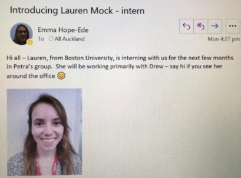

NIWA
My internship at NIWA may not have been what I expected, but I still had an overall positive experience and am grateful to have had this opportunity.
Benefits
Career Exploration
I was hoping to have a broader experience and gain some specific skills, including lab and image processing techniques, but this was not possible to do remotely. Even though I may not have acquired many concrete skills that I could apply to a future job, I was exposed to a potential career in environmental science. I have a better sense of what it would be like to work for a government or environmental consulting agency, both being popular career paths for my major, because NIWA is a hybrid of both. This internship was a good reminder to me that research is not always exciting, the way some people may imagine it; a lot of the work involved—at least until one reaches a higher-up position—is tedious or time-consuming, such as data entry or highly repetitive tasks. If I do ultimately decide to pursue a career in research, I will have to be prepared for this kind of work.
Graduate School
I learned that almost everyone in a science position at NIWA has a graduate degree, and considering that it will be more difficult for me to find a job after graduation next year due to the economic challenges associated with COVID, I am planning on going to graduate school directly after I finish my undergraduate degree. I have devoted some of my free time at home to studying for the GRE, which is required for the graduate programs I am interested in, so that I will be able to submit my applications this fall.
While this is not a typical career path for a student in my position, I am applying to master’s programs in biostatistics, which involves applying statistics to the biological sciences. I love statistics, and my supervisor at NIWA confirmed for me that these kinds of skills are highly valuable in environmental science. My plan is to get a degree in biostatistics so that I will have a much wider range of career opportunities, and if I eventually decide that I want to go into environmental science research, I will pursue a PhD in that field.
Confidence
I surprised myself in that I had more independence in my internship than I had anticipated, and I contributed some of my own ideas as opposed to simply completing the tasks that were assigned to me. I generally have very little confidence in myself, so experiences such as this one that allow me to be independent and create something I can be proud of helps me feel more confident in my abilities.
Challenges
Working from Home
While I am incredibly thankful to have had this opportunity, I did struggle with working from home. Over the past several years, I have learned that working in my living space is challenging for me, and for this reason I study almost exclusively in libraries or other common spaces. For this internship, not only did I need to work from home, but I did not have the option of going to my town library. I struggled to motivate myself to be productive while I was stuck in my house. I also never set a clear schedule for myself, and I was often stressed because I felt as though I should be working all the time.

Communication
I found that it was much more difficult than I expected to communicate with my supervisor or other people I worked with. My supervisor was quite busy and not always responsive to my emails, and we did not have as much communication as I would have liked. This had been much simpler when we were all in the office together. Because I barely knew the people I was working with and knew that my work was not a priority, I also felt less comfortable with frequent emails or calls than I would have had I been more comfortable in my position. I also really enjoyed getting to know my supervisor’s research group during my first couple weeks in the office, and even missed the social aspect of interacting with these people.
American vs. Kiwi Workplace and Academic Culture
Interestingly, many of the people I worked with at NIWA, including my supervisor, are American. I still feel that I developed a good sense of the workplace culture in New Zealand, and it matched the experiences of many of my other friends in the program. Most people seemed much more relaxed at work, and there was a greater emphasis on quality of life and the life/work balance than in the United States. My research group had a meeting once a week, and we started off each meeting by discussing how we had spent our weekends. This allowed me to get to know my colleagues in the short period of time that I worked there, and I felt a sense of community in the group.
This helped me realize how important workplace culture is. I felt so welcomed at NIWA, and this had a huge impact on my comfort and experience there. When looking for jobs in the future, I will be sure to remember that workplace culture is not only a nice bonus, but could be the difference between a job I enjoy and one I dread.
Employees at NIWA also dressed quite casually, and I heard multiple colleagues swear in conversation, something I would be quite surprised to hear at most offices in the United States. In my courses at the University of Auckland, it was surprising to me that students referred to their professors by first name. This seems representative of the more casual and relaxed relationships in academic and professional environments in New Zealand, as opposed to the stronger sense of hierarchy within academia in the United States.